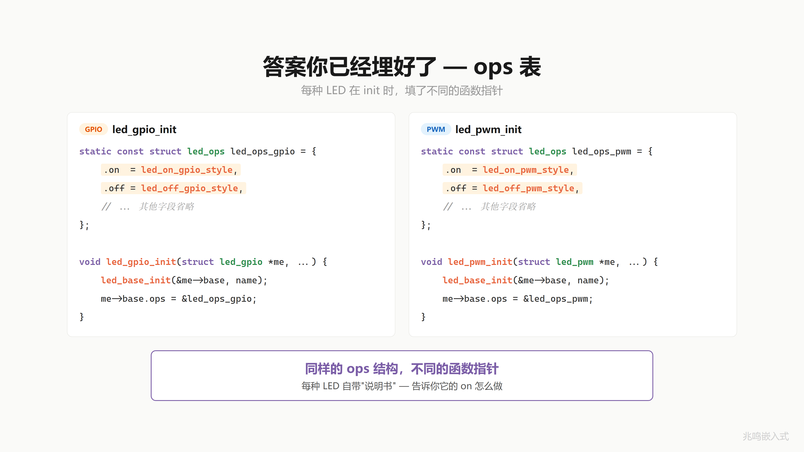

第 11 章 · 同名函数不同行为 · 多态完整图景
配套代码：oop-in-c/code/11-polymorphism/
11.1 一个真实场景
第 10 章每颗 LED 自带 ops 表。应用层每次调用还得自己写 me->ops->on(me) 这一长串：
red_led.base.ops->on(&red_led.base);
blue_led.base.ops->on(&blue_led.base);
green_led.base.ops->on(&green_led.base);
能不能把这层调用包成一个统一接口，叫它 led_on(me)，让它自己找到对的函数？
而且应用层经常要把所有 LED 装在一个数组里循环跑：
struct led_base *all_leds[3] = {
&red_led.base,
&blue_led.base,
&green_led.base,
};
for (int i = 0; i < 3; ++i)
led_on(all_leds[i]);
这一行 led_on(all_leds[i]) 跑的时候。
红灯走 gpio_on：拉引脚。
蓝灯走 pwm_on：按 duty 配 PWM。
绿灯走 i2c_on：通过 I2C 总线写控制寄存器。
同一行代码 led_on(...)，跑出三种完全不同的硬件动作。它怎么知道该调哪个？
总不能写 if 判断吧。“如果是 GPIO 就调这个，如果是 PWM 就调那个”。那加第三种 LED 又要改 if。你写的 if-else 比 LED 还多，确定是在写驱动还是做选择题。

11.2 答案在 ops 表里
别急。答案你已经埋好了。
第 10 章每种 LED 在 init 的时候，填了一张 ops 表：
static const struct led_ops led_ops_gpio = {
.on = gpio_on,
.off = gpio_off,
.toggle = gpio_toggle,
};
int led_gpio_init(struct led_gpio *me, const char *name, uint8_t pin)
{
led_base_init(&me->base, name, &led_ops_gpio);
/* ... */
}
static const struct led_ops led_ops_pwm = {
.on = pwm_on,
.off = pwm_off,
.toggle = pwm_toggle,
};
int led_pwm_init(struct led_pwm *me, const char *name,
uint8_t channel, uint8_t duty)
{
led_base_init(&me->base, name, &led_ops_pwm);
/* ... */
}
GPIO 的 init，ops 里的 on 指向 gpio_on，off 指向 gpio_off。
PWM 的 init，ops 里的 on 指向 pwm_on，off 指向 pwm_off。
两种 LED，同样的 ops 结构，不同的函数指针。每种 LED 自带一张说明书，告诉你它的 on 怎么做。

11.3 dispatch 调用链
应用层调 led_on(&gpio_led.base)，进到 led_on 函数里面，函数体的核心就一行：
me->ops->on(me);
这一行就是两次跳转。
第一跳：跟着 me 找到 me->ops。base 第一个字段是 ops，offset 0。
第二跳：跟着 ops 找到 ops->on。ops 表第一个字段是 on，offset 0。
然后跳过去执行，传入 me。
来看 GPIO：me->ops 指向 led_ops_gpio，表里的 on 指向 gpio_on。两跳之后，gpio_on(me) 被调了。gpio_on 收到的是 base 指针，里面要拿 pin 字段，怎么拿？后面讲。
再看 PWM：同样两跳。me->ops 指向 led_ops_pwm，表里的 on 指向 pwm_on。两跳之后，pwm_on(me) 被调了。
同一行代码 me->ops->on(me)，因为 me 不同，两跳之后落在不同的函数。
调用者不关心你是哪种 LED，能亮就行。

11.4 led_on 写在哪
来给它一个正式的名字。
写一个函数 led_on。写在哪？写在 led_base.c，父类的文件里。参数就一个：struct led_base *。函数体的核心就一行：通过 me 找到 ops，调 on。
/* led_base.c */
int led_on(struct led_base *me)
{
return me->ops->on(me);
}
int led_off(struct led_base *me)
{
return me->ops->off(me);
}
这是化简版。配套代码
led_base.c实际加了 NULL + ops + ops->on 三层守护·防御性写法 ch14 § 14.2 详谈。
为什么写在父类里？因为开灯是所有 LED 都具备的能力，不管你是 GPIO 灯、PWM 灯还是 I2C 灯，都得能开。所有 LED 共有的能力，就在父类统一实现。led_off 也一样。父类定义接口，子类各自实现。
来看效果：
led_on(&gpio_led.base); /* 走 gpio_on，拉引脚 */
led_on(&pwm_led.base); /* 走 pwm_on，改占空比 */
led_on(&i2c_led.base); /* 走 i2c_on，发命令 */
同一个函数名 led_on，传不同的 LED，不同的行为。这就是这一章标题说的事。
应用层呢？不用再调 gpio_on / pwm_on / i2c_on，只调 led_on 一个函数。底下是 GPIO 还是 PWM，led_on 自己分发。
C++ 里这一步 dispatch 是编译器自动生成的。你写 obj.on()，编译器看到对象有 vptr，自动展成 obj.vptr->on(&obj)。你不用写。C 里你手写 led_on：一行胶水函数，写一次，所有子类共用。

11.5 同一个接口·不同的行为
加第 100 种 LED 怎么办？写一张新 ops 表，写一个新 init。led_on 一行不改。struct led_base 一行不改。struct led_ops 一行不改。所有应用层代码（包括循环 dispatch 那段）一行不改。
软件工程里把这件事叫开闭原则：对扩展开放，对修改关闭。加新功能不要改老代码。这是面向对象设计很重要的一条工程纪律。
生物学上一个有意思的现象：会飞的动物里，鸟、蝙蝠、飞鱼是三个完全不同的演化分支。鸟拍翅膀，蝙蝠振膜翼，飞鱼滑翔。三者都解决了“飞“这个问题，但实现完全不同。
天空不关心你怎么飞，只看你能不能离地。led_on 不关心你是 GPIO 还是 PWM，只看你能不能亮。
调用方对实现的不关心，是这一整套机制的根。

11.6 这个东西叫什么
到这里，OOP 三大特性你全部解锁。
封装是藏细节。把数据和操作关在一起，外面看不见里面怎么做的。 继承是共享不变。把公共部分提出来，写一次，所有人共享。 多态是各自精彩。同一个接口，不同的实现，各做各的。
封装是藏细节，继承是共享不变，多态是各自精彩。
再说一遍本质：多态的本质是信任。调用者信任被调用者会做对的事。led_on(me) 调用时不知道也不需要知道是哪种 LED，它信任 me->ops->on 指向的函数会把这颗灯点亮。

回头看从第 9 章一路过来的三件事：
- 第 9 章·生成函数指针表。
struct led_ops是这张表，led_ops_gpio / led_ops_pwm是两份具体实例。 - 第 10 章·在对象里加指针。
struct led_base第一个字段加ops，每个对象自带一张表。 - 这一章·调用时查表找函数。
me->ops->on(me)两次跳转走到对的实现。
C++ 编译器自动做的，你一步步亲手做了一遍。
C++ 管这整套机制叫虚函数（virtual function）。原理一模一样：
class led_base {
public:
virtual int on() { ... }
virtual int off() { ... }
};
class led_gpio : public led_base {
public:
int on() override { ... }
int off() override { ... }
};
led_base *all_leds[3] = { /* ... */ };
for (auto led : all_leds)
led->on(); /* 自动 dispatch */
C++ 编译器看到 virtual 后自动做：
- 给
class led_gpio生成一张 vtable（你的led_ops_gpio） - 给每个对象的最前面塞一个 vptr（你的
me->ops） - 把
led->on()编译成led->vptr->on(led)（你的me->ops->on(me)）
C++ 编译器自动做的事，你 C 里手动做完。两份代码的机器码几乎一字不差。OOP 不是 C++ 的特权。区别只是 C++ 编译器把 vtable / vptr / dispatch 这三件事自动做了，C 里你手写。

11.7 视频里没讲透的几个细节
11.7.1 led_on 为什么不内联到 me->ops->on(me)
应用层完全可以直接写：
me->ops->on(me); /* 不通过 led_on 这层胶水, 直接 dispatch */
为什么还要套一层 led_on(me)？两个理由：
- 统一空指针检查：
me、me->ops、me->ops->on任意一个为 NULL 都会崩。胶水函数集中检查 - API 稳定：哪天 dispatch 机制改了（比如加日志、加 hook、上 trace），改一个
led_on函数，所有调用方不用动
工业代码的硬规则：不直接走 ops 表，所有 dispatch 走基类层包装的统一函数。led_on / led_off / led_toggle 是对外 API，me->ops->on 是内部实现细节。
打开 oop-in-c/code/11-polymorphism/pc/led_base.c 看 led_on 实际函数体：
int led_on(struct led_base *me)
{
if (!me || !me->ops || !me->ops->on)
return -1;
return me->ops->on(me);
}
NULL 防御一句话挡住三个潜在 NULL 来源（me / me->ops / me->ops->on），任何一个 NULL 就退出，不进 dispatch。胶水函数的好处就在这：所有调用方只看到 led_on 这一个 API，NULL check 集中在这一处。
这一章 led_on 是简化版，只做 NULL 防御 + dispatch 两件事。后面章节会给函数表加一份更严的契约，那是另一个工程话题，本章主题是“同名函数不同行为“，先不展开。
11.7.2 dispatch 在内存里走的两步
me->ops->on(me) 这一行展开就是两次访存加一次跳转。先从 me 这块内存里取出 ops 字段（base 第一个字段，偏移 0），拿到 ops 表的地址；再从 ops 表里取出 on 字段（ops 第一个字段，偏移 0），拿到目标函数地址；最后跳过去执行，参数 me 已经在那。
红灯：me->ops 指向 led_ops_gpio，me->ops->on 是 gpio_on。落到 gpio_on(me)。
蓝灯：me->ops 指向 led_ops_pwm，me->ops->on 是 pwm_on。落到 pwm_on(me)。
绿灯：me->ops 指向 led_ops_i2c，me->ops->on 是 i2c_on。落到 i2c_on(me)。
同一行代码 me->ops->on(me)，因为 me 不同，两跳之后落在不同的函数。这就是 dispatch 在内存里实际发生的事。
11.7.3 加新 LED 不改老代码
“加新 LED” 有两种情况，先分清楚再讲省什么。
情况一·同种 LED 多挂几颗（加实例）。 比如板子本来 5 个 GPIO 指示灯，现在要再挂 10 个：
struct led_gpio led_pwr; led_gpio_init(&led_pwr, "PWR", 5);
struct led_gpio led_run; led_gpio_init(&led_run, "RUN", 6);
/* ... 重复 10 次 ... */
led_gpio_init 一行不改，led_ops_gpio 一行不改。这是封装的好处：把“GPIO 灯怎么开“封在 led_gpio_init 里，外面想挂几个挂几个。
情况二·加一种新硬件实现（加种类）。 比如新一代板子换了 LED 方案，从 GPIO 改成 SPI 总线上的 LED 驱动 IC。这是当前代码完全没见过的硬件机制，但加它的步骤是机械化的：
- 写
struct led_spi，装 SPI 总线号、片选引脚等私有字段 - 写
spi_on / spi_off / spi_toggle三个函数 - 写
const struct led_ops led_ops_spi = { .on = spi_on, ... } - 写
led_spi_init，里面调led_base_init(&me->base, name, &led_ops_spi)
完了。
led_on / led_off / led_toggle 这 3 个对外 API 一行不改。struct led_base 一行不改。struct led_ops 一行不改。GPIO 和 PWM 那两份老代码一行不改。所有调用 led_on(...) 的应用代码一行不改。
这是多态 + dispatch 的好处，OOP 圈叫“开放-封闭原则“（OCP）：对扩展开放（加新种类随便加），对修改关闭（老代码不动）。
两层好处叠加。 第一层（封装）让“挂 50 个同种 LED“是一行 init 的事；第二层（多态 + dispatch）让“加一种新硬件机制“只动新文件，老文件全不动。两层加起来，工业代码才能做到“骨架不变，不断长出新模块“。
工业现场 LED 种类真实不会超过 5-6 种（GPIO 指示灯 + PWM 状态灯 + I2C 数码管 + SPI 矩阵 + WS2812 灯条已经覆盖大多数产品），但每种下面挂几十个实例很常见。这套机制让两个轴都自由：种类轴靠 dispatch，实例轴靠封装。
11.7.4 配套代码 ops 字段说明
差异原则详见前言「配套代码 vs 视频版」。下面是本章具体差异。
视频 EP16 演示主线用 on / off 两个字段，已经够说清 dispatch 这件事。本章配套代码 oop-in-c/code/11-polymorphism/ 沿用第 9 章 / 第 10 章的 on / off / toggle 三字段。三章代码包跨章演化字段一致，读者跟着改增量看得清楚。
三个字段还是两个字段，dispatch 机制完全一样：通过 me->ops 找到表，按名字调到对的实现。
11.8 你现在的代码在 STM32 上长什么样
STM32 端 led_base.h / led_base.c / led_gpio.h / led_gpio.c / led_pwm.h / led_pwm.c / led_i2c.h / led_i2c.c / main.c 一字不改。platform_gpio_xxx 这一组封装函数还是 ch01 那套（用 PIN_NUM('A', 13) 编码 port + 引脚号，_gpio_table 查表拿到 GPIOA / GPIOB / ...）：
void platform_gpio_write(uint8_t pin, bool value)
{
HAL_GPIO_WritePin(PIN_PORT(pin), PIN_MASK(pin),
value ? GPIO_PIN_SET : GPIO_PIN_RESET);
}
启动 + 调用：
int main(void)
{
HAL_Init();
SystemClock_Config();
MX_GPIO_Init();
struct led_gpio red_led;
led_gpio_init(&red_led, "red", PIN_NUM('A', 13));
led_on(&red_led.base);
/* ... */
}
这一节 platform 层用的是函数式包装的教学简化版（几个独立函数 platform_gpio_init / platform_gpio_write / ...），和 ch01 起一字不变。真正工业级的 platform 抽象用 ops 表的形式做成可切换。这件事第 16 章会专门展开。
完整片段见 oop-in-c/code/11-polymorphism/platform-mcu/stm32/（每个子类一个文件：led_gpio.c / led_pwm.c / led_i2c.c，分别走 HAL_GPIO_* / HAL_TIM_PWM_* / HAL_I2C_Master_Transmit）。完整跑通的 STM32 工程见附录 B。
11.9 Linux 用户态完整工程
Linux 上 GPIO / PWM / I2C 三种子类各自直接调内核暴露的 libgpiod / sysfs PWM / i2c-dev，应用层 led_base / main.c 一字不改，“换硬件不改应用“在 Linux 上兑现成“换子类内部实现”。完整跑通的工程见附录 C。
11.10 工业代码里的多态
工业控制板项目里的 LED 驱动到这一章已经和书里你写的几乎一模一样：
/* drivers/led/led.h */
struct led_base;
struct led_ops {
int (*on)(struct led_base *me);
int (*off)(struct led_base *me);
int (*toggle)(struct led_base *me);
};
struct led_base {
const struct led_ops *ops;
const char *name;
bool is_on;
uint32_t flags;
};
应用层调一次 led_off(handle)，背后是 me->ops->off(me) 这一行 dispatch，不管底下挂的是 GPIO 灯、PWM 灯还是 I2C 矩阵，调用方完全不知道走到哪个具体实现，落到对的就行。下一章把“应用层手里这些 struct led_base * 句柄从哪来“展开。
这就是 Linux 内核 / Zephyr / GObject / 你这一章手写的代码同一种 dispatch 机制。OOP 不是 C++ 的特权，是工业代码里很普遍的做法。
11.11 跑一遍
cd oop-in-c/code/11-polymorphism/pc
make
./demo
输出节选：
========================================
led_on / led_off / led_toggle
Same call, three behaviors per LED kind.
========================================
[base] "red" common init done, ops=XXXXXXXX
[GPIO] PA.13 init as OUTPUT
[GPIO] PA.13 -> LOW (OFF)
[GPIO] sub-class init done (pin=13)
[base] "blue" common init done, ops=YYYYYYYY
[PWM] sub-class init done (channel=1, duty=70)
[base] "green" common init done, ops=ZZZZZZZZ
[I2C] sub-class init done (addr=0x20, reg=0x01)
--- Loop over led_base * array, call led_on ---
idx=0:
[GPIO] PA.13 -> HIGH (ON)
[GPIO] "red" ON
idx=1:
[PWM] "blue" ON (channel 1, duty=70)
idx=2:
[I2C] "green" ON (addr=0x20 reg=0x01 val=0x01)
注意 ops 地址：三颗灯各自指向不同的 ops 表（led_ops_gpio / led_ops_pwm / led_ops_i2c），具体地址因 build 环境会变。同一个循环，三种硬件机制（拉引脚、配 duty、写 I2C 寄存器）各自 dispatch 到对的实现，应用层一字不知谁是谁。
完整源码见 oop-in-c/code/11-polymorphism/。
11.12 视频回放
想听口播版的可以看 B 站这一期视频：
视频里把 OOP 三大特性总结成一行：封装是藏细节、继承是共享不变、多态是各自精彩。
多态的本质是信任。led_on(me) 调用时不知道也不需要知道是哪种 LED，它信任 me->ops->on 指向的函数会把这颗灯点亮。
下一章
led_on(&red_led.base) 这一行你已经写了好几章。led_on 的参数类型是 struct led_base *，但 gpio_led 明明是 struct led_gpio，凭什么合法？
你一直在用但没仔细想过的事，把 struct led_gpio * 当成 struct led_base * 用。这件事在 C++ 里有个正式名字。下一章把它讲透，并演示它在应用层带来的真正威力。